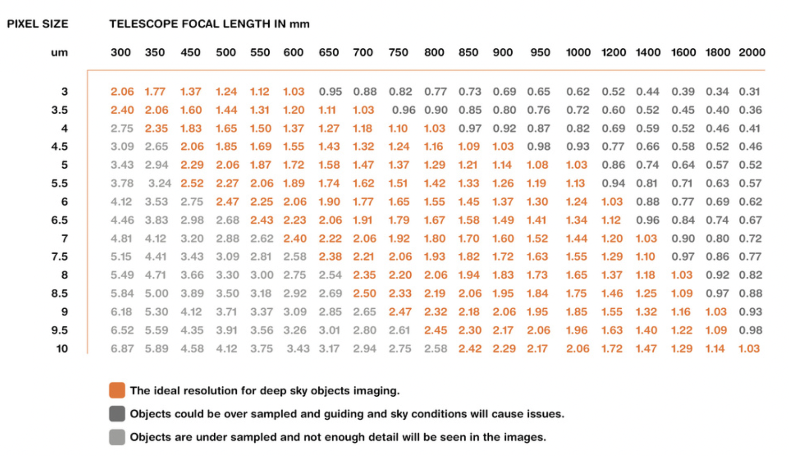

There are plenty of adaptors to mount your phone and/or camera onto a telescope. Astrophotography is very difficult to perfect, so taking pictures with a camera you already own is a perfectly valid way to photograph the galaxy. If you are undeterred by this message and want to capture the land of the stars using a dedicated astrophotography camera, you may continue...
While most would choose to buy a color camera at first glance, most astrophotographers use monochrome cameras. Monochrome cameras present several advantages, most notably:
The main advantage of a color camera is that it does not require the user to manually change color filters. Monochrome cameras will give the user brilliant photos of space, but in order to capture a colorful image, a monochrome camera requires the user to use multiple color filters in order to capture color. While color cameras are certainly easier to use, I would recommend using a monochrome camera to capture some stellar images.
Once you have decided which type of camera to use, it is important to consider the ideal pizels sizes for your telescope. A pixel size too high could result in undersampling, a size too low could result in oversampling. A great resource to find the best pixel size is this chart below:
